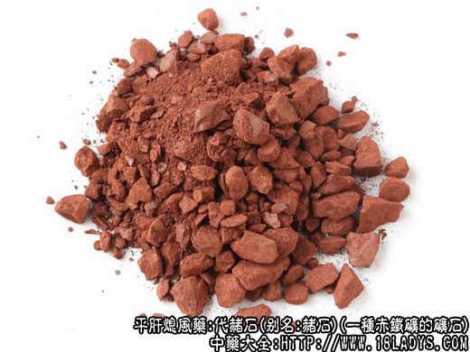

本品为较常用中药。始载《神农本草经》，列为下品。原名“代赭”。
别名：代赭石、钉头赭石。
来源：为一种赤铁矿的矿石。
产地：主产山西、河北，此外河南、山东、湖北、四川等省亦产。
性状鉴别：本品呈不规则的扁平块状，大小不一。全体棕红色或铁青色，一面有多数乳头状的“钉头”（习称钉头赭石）。另一面与突起相对处有同样大小的凹窝。互相摩擦，有棕红色粉末。质坚硬，不易破碎，断面显层迭状，且每层均依钉头而呈波涛弯曲。气无。味淡。本品粉末，加盐酸能缓缓溶解，其溶液微带棕色，加10%的亚铁氰化钾试液立刻呈绿黄色沉淀。以色棕红，断面显层迭状，每层均有钉头者为佳。
主要成分：含二分氧化硅（40.25%）、三氧化二铁（51.52%）等。
药理作用：镇胃降气、平肝熄风、含三氧化二铁，其铁质能促进红血球和血素的形成有补血作用。对于中枢神经有镇静作用，并有轻微的收敛作用。
炮制：捣碎生用或火煅醋淬。
性味：苦，寒。
归经：入肝、心包经。
功能：重镇降逆，清火平肝，凉血、止血。
主治：呕吐呃逆，噫气，喘息，肝热眩晕，吐衄下血等症。
临床应用：
（1）镇胃降气而止呕止噫（呃逆或噫气），前人称此作用为镇逆。适用于胃气虚弱的呕吐、呃逆、噫气、胃脘满实。常配旋复花、党参、干姜等，方如旋复代赭汤。此方在顽固性呃逆用阿托品治疗无效时用，用之有时可取得效果，但热性呃逆则忌用。
有用于治噎膈，咽食时觉有梗阻而不下，诊断属食道贲门下痉挛者，可以代赭石为主药，开胃降气，配以党参培元，佐以当归、知母，方如参赭培气汤。
（2）平肝熄风，治肝阳上亢而致的头晕、目眩。脑胀、耳鸣。对于有上述症状的高血压病而又兼有心悸、脚步虚浮。手足震颤、烦躁、不欲卧床、大便不畅者，尤其适合，取其有镇静、通便作用，常配牛膝、牡蛎、玄参等，方如赭石平肝汤。
（3）用于治喘，对实证气喘较合适，尤其心性哮喘患者，当出现有气促、胸翳等哮喘发作迹象时，可用旋复代赭汤防其发作；在哮喘发作后，仍有噫气、汗出，可用此方善后。对于肺热咳喘者，可配旋复花、桑白皮、苏子等药，此时代赭石每剂可用至30G。
（4）用于凉血止血，适宜于吐血而病在肝胃，兼有胃脘气逆，咳而欲呕，或痰中带血者，配旋复花、丹皮、鲜生地等。如其病在肺，更加配紫菀、款冬、杏仁、枇杷叶。
用量：9～30g，入汤剂宜打碎先煎。
处方举例：
（1）旋复代赭汤（《伤寒论》）：旋覆花9g(包)、代赭石9g（打碎先煎），党参9g、半夏6g，炙甘草6g，生姜9g，水煎，日分3次温服。
（2）参赭培气汤（《衷中参西录》）：党参18g，生赭石24g（打碎先煎），天门冬12g，法半夏9g，淡苁蓉12g，知母15g，当归9g，水煎，服药后含化咽服柿霜饼15g。
（3）赭石平肝汤：代赭石30g（打碎先煎），怀牛膝15g，龙骨15g，牡蛎15g，玄参12g，天冬6g，蒺藜15g，钩藤24g，白芍12g，水煎服。
（4）赭石按其形色不同，商品分为三种规格，除正文所述的为广大地区习用，并认为质量较好外，尚有以下二种。
①无钉赭石：性状与前种基本相同，惟不具钉凹，色较暗淡，断面层纹平直。习惯认为质量较次。
②卵状赭石：呈卵圆形、扁圆形或不规则的块状，一般1~2厘米，附有赭红色粉末，易落。砸开后，断面紫黑色，不整齐。仅在四川地产地销。